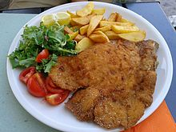

Receta de una Milanesa Napolitana

Descripcion
Así, con la delicadeza que caracteriza a esta web comienza este post debido, infaltable, épico, sobre una de las comidas emblemáticas del adolescente hambriento uruguayo: la milanesa.
Ingredientes
- Milanesas
- 150g de queso mozzarella
- 150g de jamon cocido
- Una lata de pure de tomate
- Una cebolla
- 2 dientes de Ajo
- 2 hojas de Laurel fresco
- Aceite
- Sal
- Pimienta
Paso a paso, salsa de tomate
- Picamos el ajo y la cebolla.
- Calentamos una olla con aceite, ponemos el ajo y la cebolla dentro y esperamos que la cebolla se transparente.
- Despues, agregamos el pure de tomate y las dos hojas de laurel, deje cocinar por alrededor de 20 minutos.
- Agregamos sal y pimienta a gusto.
Paso a paso, armado de la milanesa
- Vamos colocar primero, por encima de nuestra milanesa, la salsa que acabamos de hacer.
- Luego, colocamos unas fetas de jamón cocido.
- Finalmente, por encima, ponemos nuestro queso.
- Así, las vamos a llevar al horno 180º hasta que se derrita el queso y chorree por los costados generando el efecto más hermoso y tentador del universo.
- Al sacarlas podemos tirar por encima unas pizcas de orégano y ¡listo!